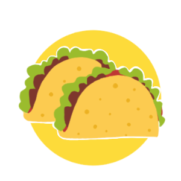
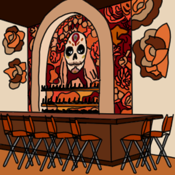
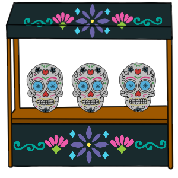

Situé entre les États-Unis et l'Amérique centrale, le Mexique est un pays réputé pour ses plages du Pacifique et du golfe du Mexique, ainsi que pour ses paysages variés. On peut trouver le désert, les montagnes ou encore la jungle au Mexique. Il y a également des ruines anciennes comme Teotihuacan et la cité maya de Chichén Itzá ainsi que de villes datant de l'époque coloniale espagnole. La capitale Mexico est réputée pour ses musées renommés, ses restaurants gastronomiques ou encore ses boutiques haut de gamme.

Cuisine
Pour ce qui est de la cuisine mexicaine, elle est considérée comme très variée de par son héritage préhispanique et européen, conséquence de la conquête espagnole de l'empire Aztèque au cours du XVIᵉ siècle. Elle a aussi connu l'influence des cuisines africaines, caribéennes, asiatiques et moyen-orientales. Pour les plats typiques mexicains, on peut évidemment citer le Taco qui est une tortilla de maïs garnie de n’importe quels ingrédients (viandes ou légumes) et que l’on mange avec les doigts. Ou encore la quesadilla, l’enchilada, les tamales et encore un grand nombre de plats qui sauront vous plaire, tout ça à découvrir au Puy-En-Velay. Et tout comme les autres pays, vous pourrez déguster et apprendre à cuisiner ces plats traditionnels mexicain.
Tenues traditionnelles
Les vêtements mexicains ont tous en commun l’appréciation des couleurs vives et du beau travail. La tenue traditionnelle du Mexique est sans aucun doute le poncho. Mais pour les femmes on peut également parler du huipil, qui est un vêtement sans manches, semblable à une tunique. C’est un vêtement qui permet d’identifier la communauté à laquelle appartient celui qui le porte. Les motifs peuvent également indiquer l’état civil ou les croyances personnelles de la personne qui le porte.

Bar
Les bars au Mexique sont nombreux et réputés. Pour ce qui est des alcools consommés au Mexique, on peut directement penser à la Tequila. C’est même considéré comme la boisson nationale, elle est extraite de la plante d'agave. La tequila se boit pure en une gorgée en prenant une rondelle de citron et un peu de sel. Il y a également la Margarita qui est un cocktail célèbre à base de Tequila. Ou encore par exemple le Rompope. Vous pourrez évidemment goûter à tous ses alcools au Puy-En-Velay.

Exposants
Certains objets et œuvres d’arts typiques mexicains seront présentés sur les stands, comme des masques de Lucha Libre, des Alebrijes ou encore des pièces d’artisanat en argile (piezas de barro).
Activité
Des jeux seront organisés au Puy-Du-Monde sur le thème du Mexique, il y aura un concours sur les Pinata, et également un concours assez épicé que nous vous invitons à découvrir sur place.